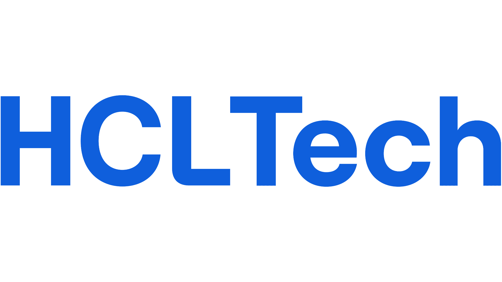
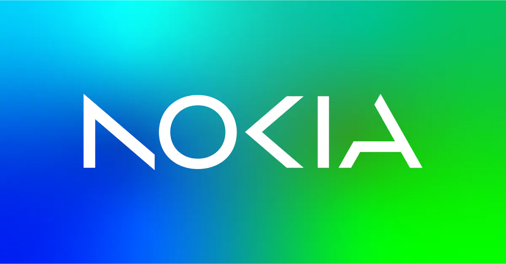
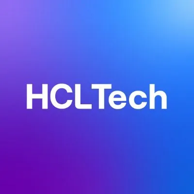
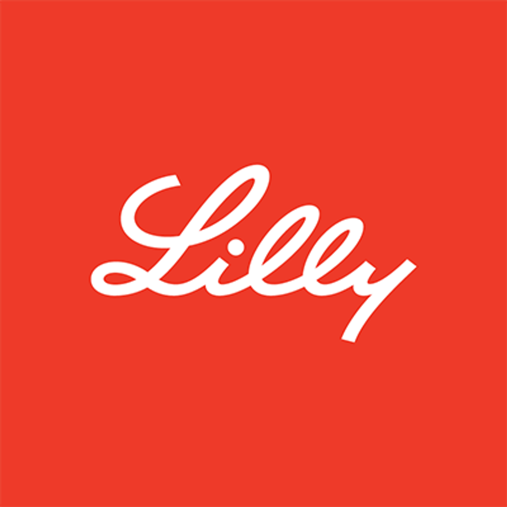

The Economist Group
Full Stack AI Engineer · AI Lab
AI features · full-stack product engineering · voice/model experiments · evaluationI build AI-powered products, agentic systems and full-stack experiences that turn complex information into useful, human interfaces — from journalism and research to real-time voice and enterprise AI.
Companies and project contexts represented below.




Company marks are shown only to identify professional or project context. They do not imply endorsement or ownership.
At The Economist Group — AI Lab, I work across the stack on AI features and experiments that connect The Economist's journalism and research with new interfaces — including conversational, voice and interactive experiences.
Full Stack AI Engineer · AI Lab
AI features · full-stack product engineering · voice/model experiments · evaluationSenior Associate
Agentic AI · RAG/CAG · real-time voice · React/Next.js · AWS/Azure · enterprise AISenior Software Engineer
Nokia security platforms · agentic alerting · ELK/SIEM · automation · vulnerability managementMulti-step agents, routing, tool use, structured outputs and grounded retrieval — designed as systems rather than isolated prompts.
Streaming interfaces and voice systems where latency is part of the product. WebSockets, full-duplex interaction and incremental response delivery.
AWS and Azure experience across deployment, containers, managed services, CI/CD and serverless/event-driven architecture.
Voice + chat, grounded knowledge, agentic actions, low-latency streaming and safety-aware escalation — built as a full product experience rather than a demo.
Built real-time voice + chat capabilities for an enterprise medical AI representative for Eli Lilly, combining grounded medical knowledge, agentic workflows, streaming and secure escalation paths.
Built enterprise AI experiences for supply-chain risk analysis, combining grounded retrieval, conversational UX, real-time streaming and analytics for a enterprise/Planalytics context.
End-to-end analytics experience translating meteorological and sales data into interactive insights and AI-assisted decision support.
Recognized three times, including cash-prize recognition, for project delivery and performance.
Recognition from Nokia leadership for work supporting Nokia GS.
Top-performer recognition for continuous performance across three years at HCLTech.